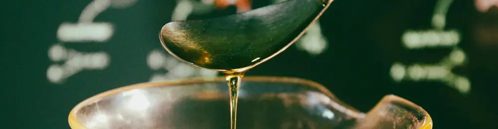

Panduan Lengkap: Cara Membuat Sabun Cuci Piring Sendiri dari Biang Anti Ribet!
Dipublikasikan pada 31 Juli 2025

Cairan sabun cuci piring adalah kebutuhan rumah tangga yang tak terpisahkan. Dari membersihkan tumpahan makanan hingga mencuci tumpukan piring kotor, sabun cuci piring memegang peranan penting dalam menjaga kebersihan dapur Anda. Dengan beragam merek dan varian di pasaran, tahukah Anda bahwa ada cara hemat dan praktis untuk membuat sabun cuci piring sendiri? Ya, dengan biang sabun cuci piring!
Banyak toko online marketplace kini menawarkan biang sabun cuci piring yang diklaim dapat menghasilkan hingga 3 liter cairan sabun siap pakai. Benarkah demikian? Mari kita buktikan bersama tim Mas Tukang!
Mencoba Biang Sabun Cuci Piring Aroma Lemon: Hemat dan Praktis!
Kali ini, kami mencoba paket biang sabun cuci piring aroma lemon. Paket ini berisi biang sabun dan foam booster untuk menghasilkan busa melimpah, dengan total berat 670 gram. Untuk mencapai 3 liter cairan sabun cuci piring, kita hanya perlu menambahkan 2300 mililiter air. Ekonomis, bukan?
Alat dan Bahan yang Perlu Disiapkan
Sebelum memulai proses pembuatan sabun cuci piring, pastikan semua perlengkapan sudah siap:
- Wadah pencampur: Gunakan wadah yang cukup besar untuk menampung 3 liter cairan.
- Bor tangan dan pengaduk mixer: Alat ini akan sangat membantu proses pencampuran agar lebih mudah dan merata.
- Sarung tangan (opsional): Jika kulit Anda sensitif terhadap bahan kimia, sangat disarankan untuk menggunakan sarung tangan demi keamanan.
Langkah Demi Langkah Membuat Sabun Cuci Piring Sendiri
Setelah semua siap, mari kita mulai!
- Tuang bahan dasar: Masukkan biang sabun dan foam booster ke dalam wadah pencampur.
- Campurkan air secara bertahap: Tuangkan air sedikit demi sedikit sambil diaduk perlahan menggunakan pengaduk mixer yang dipasang pada bor tangan. Untuk tahap awal, cukup tuang sekitar 200 mililiter air dan aduk hingga merata.
- Aduk hingga kental: Setelah itu, terus tambahkan air sedikit demi sedikit sambil diaduk hingga seluruh cairan tercampur rata dan adonan sabun mencapai kekentalan yang diinginkan, mirip dengan sabun cuci piring biasa. Pada tahap ini, warna campuran mungkin masih kuning keruh, seperti custard.
- Diamkan semalaman: Biarkan campuran sabun didiamkan selama semalaman. Proses ini penting agar sabun menjadi bening dan busa terbentuk sempurna.
-
Hasil Akhir: Sabun Cuci Piring Bening dan
Berbusa Melimpah!
Keesokan harinya, Anda akan mendapati cairan sabun cuci piring buatan sendiri sudah berubah menjadi bening, persis seperti sabun yang sering Anda beli di supermarket. Setelah diuji, sabun ini terbukti berbusa banyak dan kesat, efektif membersihkan peralatan dapur Anda.
Sekarang, saatnya mengemas sabun cuci piring buatan Anda ke dalam botol-botol bekas sabun atau sampo yang bersih. Siap digunakan kapan saja!
Tips Penting saat Mengaduk Adonan Biang Sabun
Perlu diingat, saat mengaduk menggunakan pengaduk mixer yang dipasang pada bor tangan, hindari menggunakan kecepatan tertinggi. Mengapa? Hal ini bertujuan agar adonan sabun tidak menghasilkan busa berlebihan selama proses pencampuran, namun tetap tercampur secara sempurna.
Bagaimana, tertarik untuk mencoba cara membuat sabun cuci piring sendiri menggunakan biang sabun? Ini adalah solusi hemat dan praktis untuk kebutuhan rumah tangga Anda. Video di bawah menjelaskan detail tentang cara mencampur biang sabun. Selamat mencoba dan semoga bermanfaat!